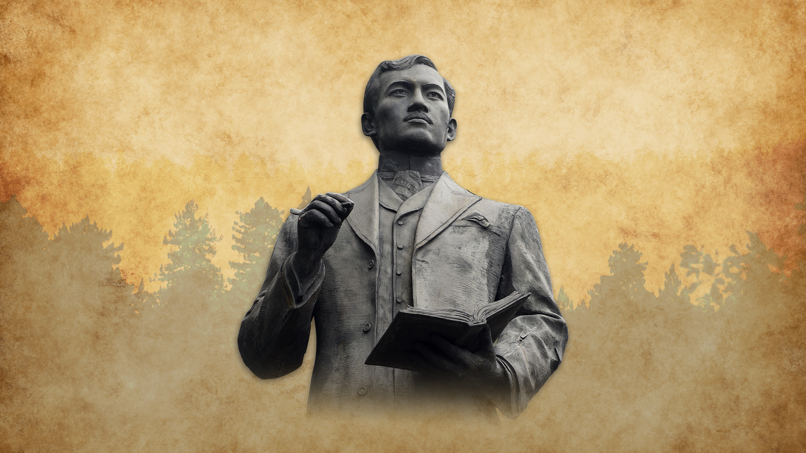

ABOUT RIZAL
José Rizal was a Filipino revolutionary, writer, and nationalist who contributed
significantly to the struggle for Philippine independence against Spanish colonial occupation.
He was born on June 19, 1861, in Calamba, Laguna. He was an outstanding student who continued higher
education in Manila and Europe. an expert in many fields including medicine, literature, and art.
His strong love for the Philippines and his need for peaceful change compelled him to create influential
novels such as Noli Me Tangere and El Filibusterismo, which revealed Spanish officials' abuses and the church clergy.
Rizal's works ignited a surge of national awareness among Filipinos. Although he did not call for armed
revolution,
his thoughts influenced many of the leaders of the Philippine Revolution. Rizal established La Liga
Filipina, a group that sought to organize Filipinos and implement reform through education and civic
participation. But his activities were viewed by the Spanish authorities as threatening, and so he was arrested and exiled in Dapitan, and eventually executed.
José Rizal was shot at Bagumbayan (now Luneta Park) in Manila on December 30, 1896. His martyrdom made
him a symbol of heroism and more intensified the revolutionary movement that later drove thes country
towards independence. He is now celebrated as the national hero of the Philippines, not just remembered for
his intellectual genius but also for his love of country, courage, and unselfish commitment to the Filipino people.
Contributions and Legacy
Jose Rizal played a crucial role in inspiring nationalism and advocating peaceful reform during the Spanish colonial period in the Philippines. Through his writings, especially Noli Me Tangere and El Filibusterismo, he exposed the abuses of the Spanish clergy and government, sparking the national consciousness of Filipinos. Rizal’s ideas focused on education, civil rights, and equality—paving the way for a peaceful approach to social and political change.
Although Rizal was not a supporter of violent revolution, his execution in 1896 became a turning point that fueled the Philippine Revolution against Spain. His martyrdom transformed him into a national hero and a symbol of Filipino resistance and unity. Revolutionaries like Andres Bonifacio were deeply influenced by Rizal’s ideals and used them as a foundation for their movement.
In honor of his enduring legacy, numerous monuments have been erected, the most famous being the Rizal Monument at Luneta Park in Manila. Countless streets, schools, and institutions across the country are named after him. Every year, December 30 is commemorated as Rizal Day, a national holiday remembering his sacrifice and his lasting contribution to Philippine independence.
Fun Facts About Rizal
- He was a polyglot. Rizal could speak over 22 languages, including Spanish, French, German, Japanese, Arabic, and even Latin.
- He was a licensed doctor and an eye specialist. Rizal completed his medical studies in Spain and specialized in ophthalmology to treat his mother’s eye condition.
- He was also an artist and inventor. Aside from writing, Rizal was skilled in drawing, sculpting, and even designing things like a wooden machine for making bricks.
- He was a travel junkie. Rizal visited countries like Spain, France, Germany, Japan, Hong Kong, and the U.S. during a time when travel wasn’t as easy as it is today.
- He used pen names. He sometimes wrote under the names Laong Laan and Dimasalang when publishing controversial articles to avoid persecution.
- He had a romantic side. Rizal had multiple love interests throughout his life. His most famous and final love was Josephine Bracken, an Irishwoman he met in Dapitan.
- He was very short! Rizal stood only about 4 feet 11 inches tall (around 1.5 meters) — but he was a giant in intellect and spirit.
- He was sentenced to death—but wrote until the end. Before his execution, he wrote "Mi Último Adiós" (My Last Farewell), a heartfelt farewell poem that is now considered a national treasure.